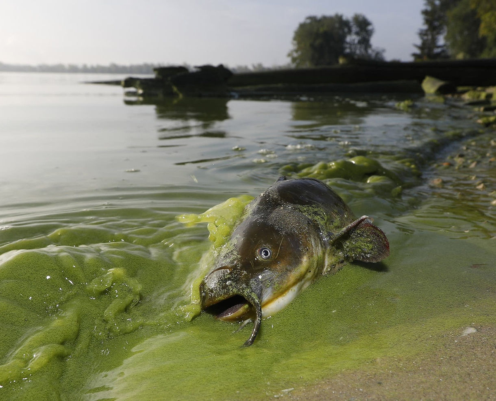
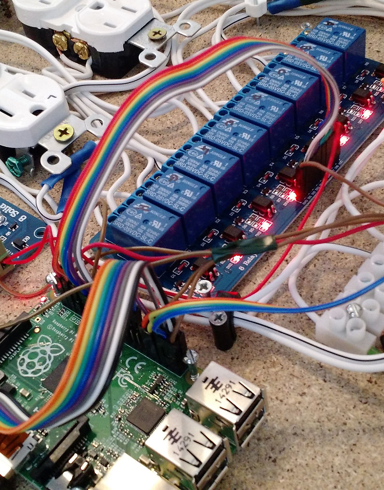
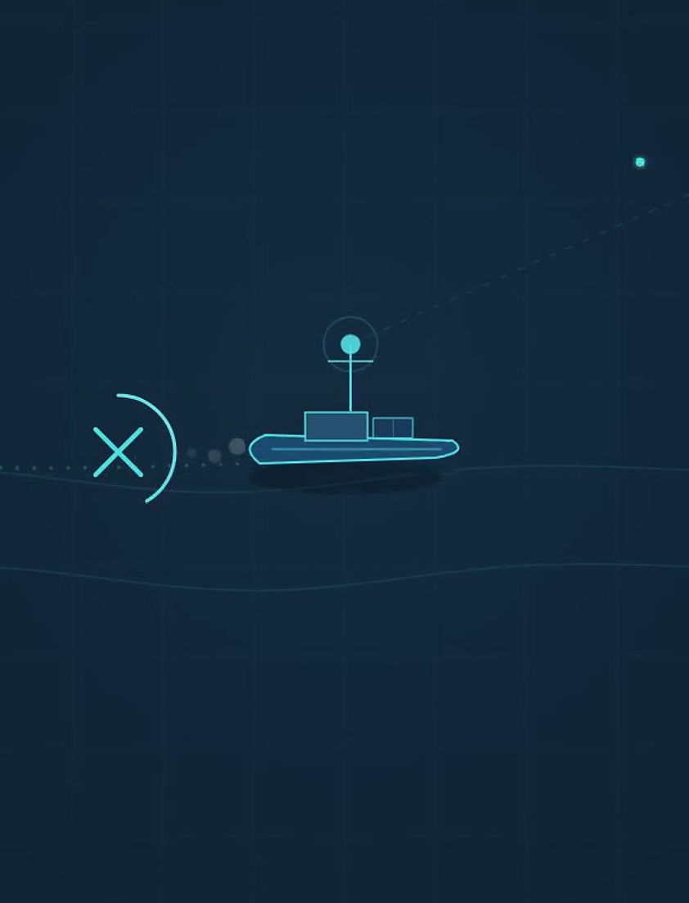
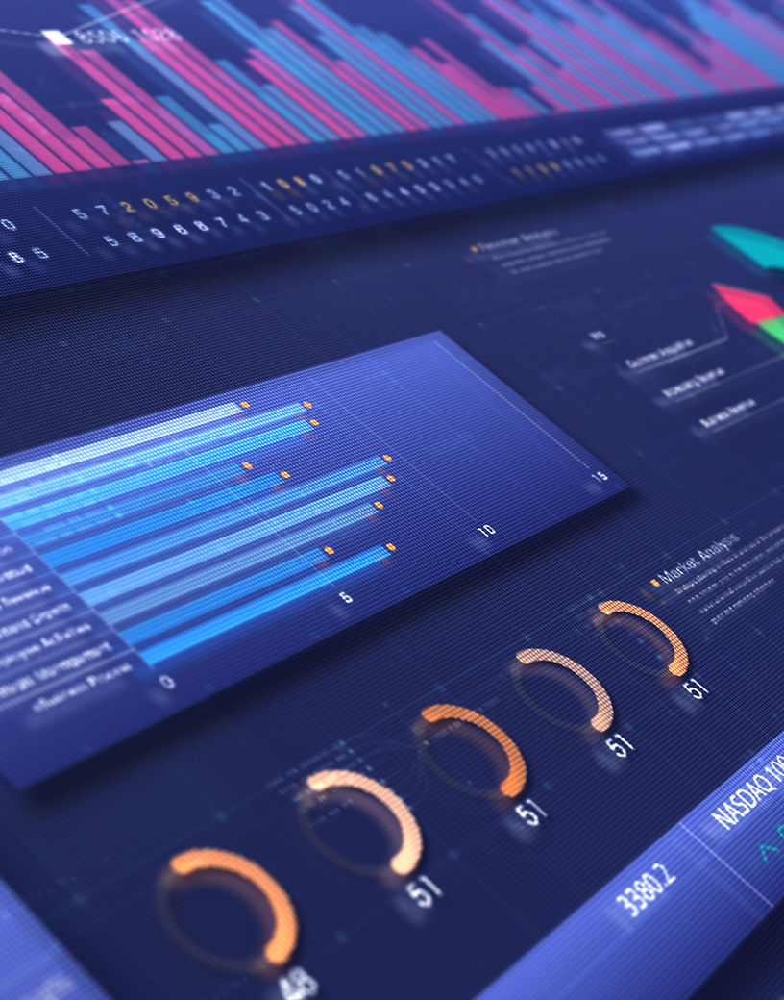

Autonomous monitoring solutions for lakes, rivers, and catchment systems. Affordable, reliable, and built for the field.
The Challenge
Conventional water quality monitoring faces critical limitations that put communities, budgets, and ecosystems at risk.
Conventional monitoring relies on costly manual deployments that expose personnel to hazardous conditions and strain already limited budgets.
Significant latency between data collection and lab results means decisions are based on outdated information, delaying critical responses.
Existing sensors operate with limited visibility, providing an incomplete picture of water quality across large and complex catchment areas.
Our Solution
A modular, end-to-end platform delivering real-time water quality intelligence from sensor to screen.
Multiparameter sensors measure a wide range of water quality parameters simultaneously. Built to be modular and configurable for any waterway and operational need.

Unmanned surface vehicles navigate hazardous and remote waterways autonomously, collecting multipoint data without putting personnel at risk.

AMWA deploys across lakes, rivers, and catchment systems, collecting multipoint data across the full catchment in real time for comprehensive environmental oversight.
Real-time data transmission to a secure cloud platform with AI-driven anomaly detection, enabling instant alerts and continuous environmental awareness.
Live water quality intelligence delivered to any device. Decisions made on current data, not delayed lab reports.

Get in touch to learn how AMWA can transform your water quality monitoring.
Get in Touch